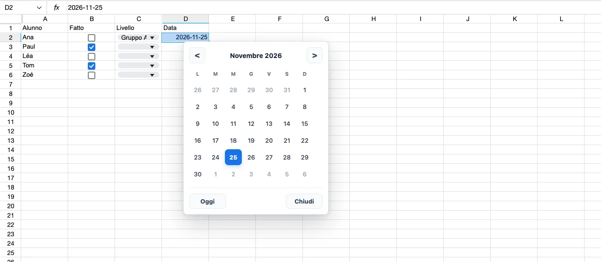

Caselle, elenchi e calendario

Caselle di controllo
Selezionare le celle, Inserisci › Casella di controllo. Un clic spunta o toglie la spunta; la cella vale TRUE o FALSE.
=SE(B2; "fatto"; "da fare")
=MATR.SOMMA.PRODOTTO(B2:B6; C2:C6)
=MATR.SOMMA.PRODOTTO(B2:B6; B2:B6)La seconda formula somma i valori della colonna C la cui casella è spuntata; la terza conta le caselle spuntate.
Elenchi a discesa
Selezionare le celle, Inserisci › Elenco a discesa….
| Origine | Contenuto |
|---|---|
| Valori | le opzioni, una per campo; Aggiungi opzione; senza virgola |
| Da un intervallo | un intervallo le cui celle sono le opzioni: Foglio2!$A$1:$A$10 |
Un intervallo senza $ si sposta da una cella all’altra, come una formula riempita. Se le sue celle cambiano, le opzioni seguono.
La cella mostra una freccia; un clic apre le opzioni. Un valore diverso da quelli dell’elenco non è accettato.
Calendario
Un doppio clic su una cella di data apre un calendario: scegliere un giorno, cambiare mese con < e >, Oggi per la data di oggi. Si apre su ogni cella con un formato di data, anche vuota, salvo se contiene una formula o è bloccata.
Per una colonna di date da riempire con il calendario: selezionarla e darle il formato Data.
Togliere
Canc toglie la casella o l’elenco dalla cella, con il suo valore.
Caselle ed elenchi sono salvati nel file Excel; le caselle vi sono caselle di controllo di Excel.